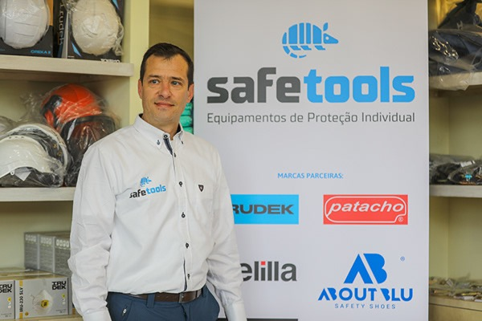

Safetools – Professional Photography (Opening)
Cada evento tem uma história única, e a inauguração da Safetools marcou o início de uma marca portuguesa que promete inovar no setor de equipamentos de proteção individual. O desafio foi capturar, não apenas o espaço e os produtos, mas a essência da marca, a energia do momento e os detalhes que fazem a diferença. Luz, enquadramento e composição foram cuidadosamente trabalhados para criar imagens que transmitissem profissionalismo, inovação e confiança — os pilares da Safetools.
